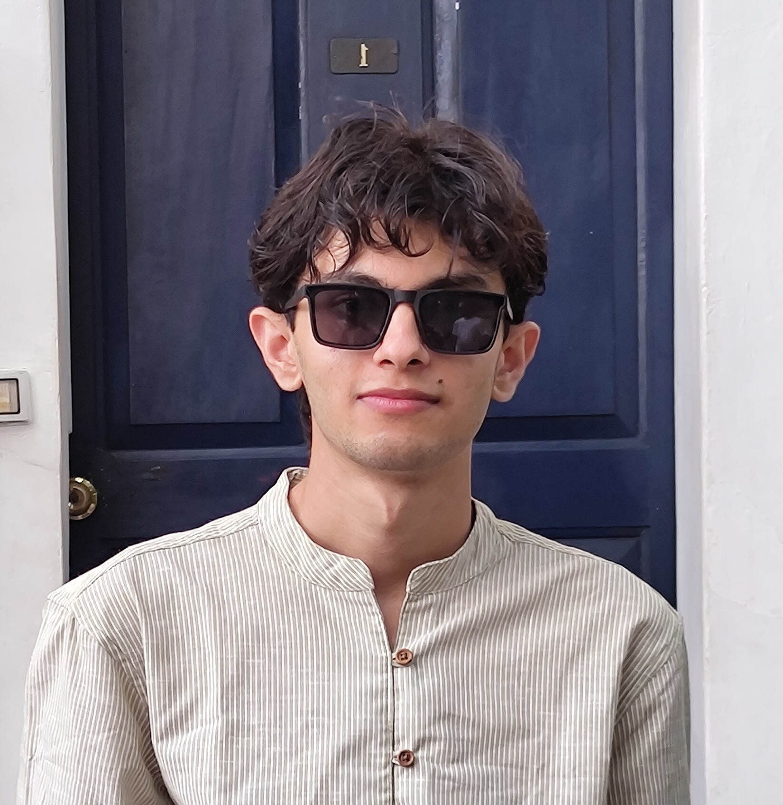

No. 1 — Euler, 1748
Take the circle, half-turn it, let growth meet rotation, and everything cancels but one.
eiπ + 1 = 0
five numbers, one line, all of analysis
Vinay · Bangalore · IISc
I study maths & computer science, and build machines that learn — agents, language models, the strange geometry of high dimensions. Somewhere between a proof and a program, there is art.
a diffusion field · your cursor denoises it · hold still and it re-scatters
No. 1 — Euler, 1748
Take the circle, half-turn it, let growth meet rotation, and everything cancels but one.
eiπ + 1 = 0
five numbers, one line, all of analysis
No. 2 — The Basel Problem
Add every reciprocal square — one, a quarter, a ninth, a sixteenth — and π steps out of geometry, uninvited, inevitable.
ζ(2) = π²⁄6
solved by euler at twenty-eight
No. 3 — Cantor, 1891
List the reals, if you dare. Walk down your list, change each digit, and the number you build was never on your page.
|ℝ| > |ℕ|
some infinities are larger than others
I’m Vinay — a B.Tech student in Mathematics and Computing at the Indian Institute of Science, Bangalore, working at the intersection of machine learning research and systems engineering.
Lately I’ve been building autonomous agents that do research on their own, visualising what happens inside large language models, and squeezing those same models down until they run anywhere. I like problems where the theory is beautiful enough to be worth implementing.
Off-screen: long walks, longer proofs, and the ongoing project of noticing things.
